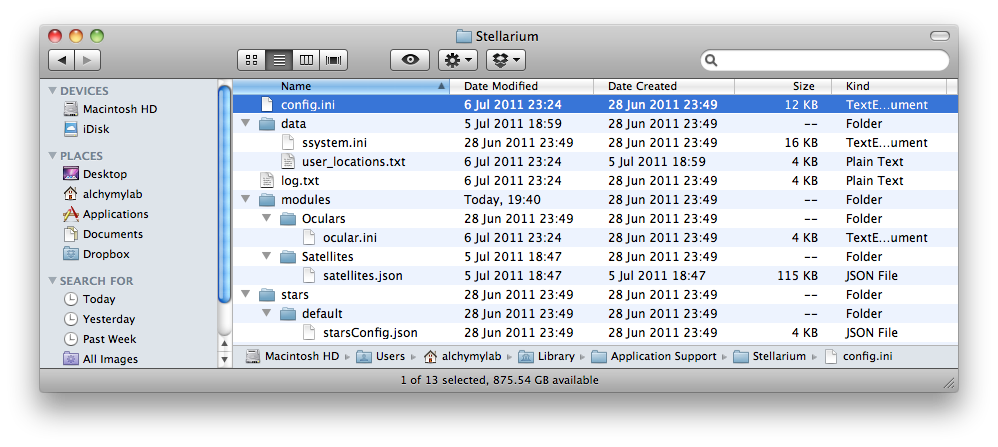

![[*]](imgLibStellarium/crossref.png) (depending on the time of day that you start the program).
(depending on the time of day that you start the program).
The main application comes as a package file or 'bundle' which effectively
hides the contents inside a folder. A bundle is basically a folder that appears in the Finder as a single
file. This allows users to easily install and move
applications without having to worry about supporting files
being scattered around the system, and it can also prevents users from
corrupting their
applications by trashing a necessary file. To view the Stellarium
application contents in Finder do the following.
1. In the Finder, choose the Stellarium bundle to inspect.
2. Pull down the Action menu in the Finder window (the one with a picture of a gear) and choose Show Package Contents. This opens a new window with a Contents folder, as shown in the figure below.
Files are broadly separated by the type of data. For StelModules
which need many data files, there is one directory. e.g.
StarMgr files are stored in the stars directory,
LandscapeMgr files may be found in the landscapes
directory.
There are also directories which are shared among modules and other parts
of the program, for example the textures directory.
The Installation Data Directory, which is where the program executable, libraries and all data files which are distributed with the program are installed. It is the place where Stellarium's data files are installed on your computer. This directory varies depending on the operating system. In this case, OS X, the application comes as a packaged application bundle and Finder 'Show Package Contents' must be used to explore the application folders.
| OS | Location |
| MacOS X | The Installation Data Directory is found inside the application bundle. |
Important data files which may be found in the Installation Data Directory include:
data/ssystem.ini: the solar system bodies description
file
stars/default/*: star catalogues
nebulae/default/*: nebula textures and data files
scripts/: script files
textures/: general purpose texture files (button icons
etc)
landscapes/*/*: landscape textures and data files
User Directory Structure
When Stellarium searches for data, texture and other files it looks in two
separate locations, with the User Data Directory being first. The User Data Directory stores
per-user copies of any customised data files. It is the place where Stellarium saves the configuration file, recorded scripts and can also be
used to override files in the Installation Data Directory if the
user wishes to customise Stellarium.
$HOME/Library/Preferences/Stellariumwhere
$HOME (user login id) is your home directory.
This folder is created the first time a user runs Stellarium.
The directory tree within the User Data Directory is the same as the Installation Data Directory. Any file which exists in the User Data Directory will over-ride that in the Installation Data Directory.
For example, to modify the position of a nebula texture, the user may
copy the nebulae/default/nebula_textures.fab file from the Installation Data Directory to the
nebulae/default
sub-directory of the User Data Directory and modify it there. In
this manner, each user on a multi-user system may have their own customized
Stellarium data files.
If a file exists in the User Data Directory, it will be used in preference to a file with the same name existing in the Installation Data Directory. This allows users to customise data files, textures and so on without modifying the originally installed files.
As you can see, the file is specified only by the partial path. This
partial path is appended first to the User Data Directory. If, and
only if the file is not found there, it is searched for in the
Installation Data Directory. Thus if the user has a customised copy at:
<User Data Directory>/data/comets.dat it will be used, else the
version in the Installation Data Directory will be used.

It is in this folder that the application creates a log file listing the start up process including what plugins were loaded (if any). If configuration changes are made to Stellarium, e.g. which plugins load at startup, then this may show in the log file. The file has diagnostic uses, if there are problems loading Stellarium then the errors may be listed here.
Click the Stellarium icon on the desktop to start the application. Details of the startup will be written to the log.txt file in the User Directory which can be checked if any problem occurs in startup.
Stellarium ships with the first four star catalogue files of nine files. The implementation of a catalogue downloading tool helps ease the task for users wanting the extra catalogues by automating the download and installation procedure.
The files which come with Stellarium are found by the partial paths:
stars/default/stars_0_0v0_1.cat stars/default/stars_1_0v0_1.cat stars/default/stars_2_0v0_1.cat stars/default/stars_3_1v0_1.cat
Naturally, these files are to be located in the Installation Data Directory (because they ship with the installer).
The catalogue downloader tool runs within Stellarium. When it downloads extra star catalogue files, it should place them in the User Data Directory. After downloading all the catalogues, the paths to the various files should look like this:
<Installation Data Directory>/stars/default/stars_0_0v0_1.cat <Installation Data Directory>/stars/default/stars_1_0v0_1.cat <Installation Data Directory>/stars/default/stars_2_0v0_1.cat <Installation Data Directory>/stars/default/stars_3_1v0_1.cat <User Data Directory>/stars/default/stars_4_1v0_0.cat <User Data Directory>/stars/default/stars_5_2v0_0.cat <User Data Directory>/stars/default/stars_6_2v0_0.cat <User Data Directory>/stars/default/stars_7_2v0_0.cat <User Data Directory>/stars/default/stars_8_2v0_0.cat
After you run Stellarium for the first time, you will see a something like
one of the sides of the image shown in Figure (depending on the time of day that you start the program).
At the top of the screen you will see: the date, the time, Stellarium's version number, the location of the observer, the field of view (FOV) and the current frame-rate (FPS). In the bottom-left corner of the screen is the main tool-bar. In the bottom-right corner of the screen is the time tool-bar. The rest of the screen is a graphical representation of the sky and the ground.